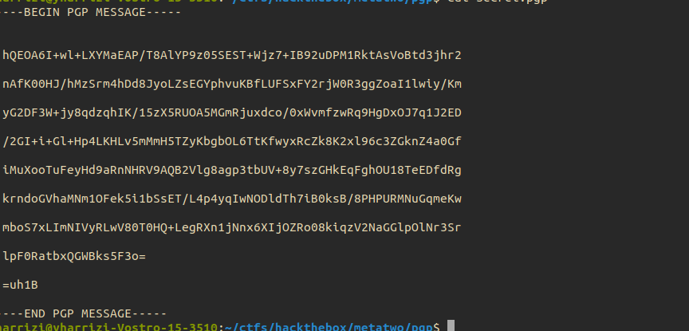

11- Gpg
Introduction
- An SSH key authorizes you to log into an SSH server without a password (see this guide from Indiana University for details)
- a PGP key can be used to sign a document or a git commit (i.e., prove you’re the one who made it) or decrypt messages intended only for you, among other things.
Exploit : keys found

- decrypt private key to retrieve passphrase
- gpg2john <private.key>
- joh hash.txt
- decrypt online secret.gpg